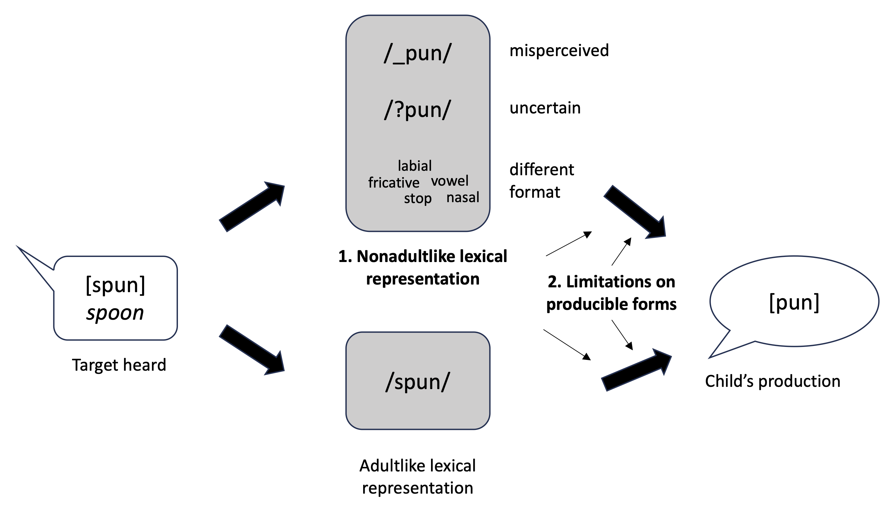
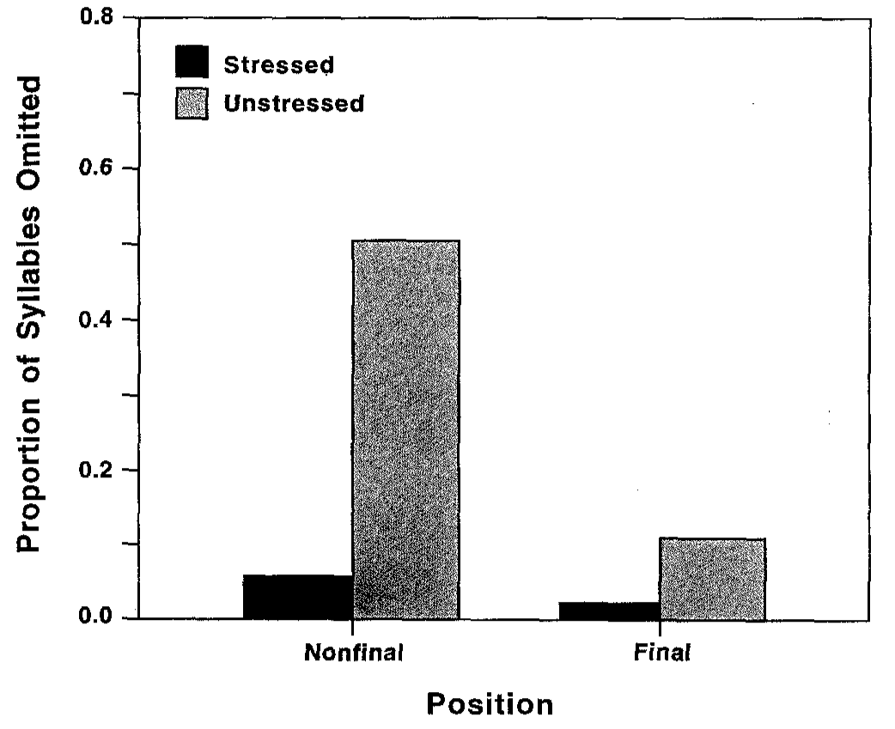
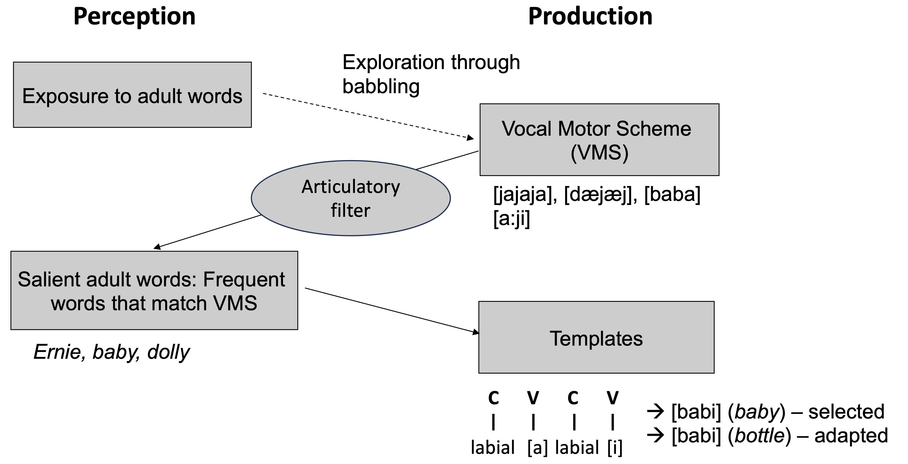
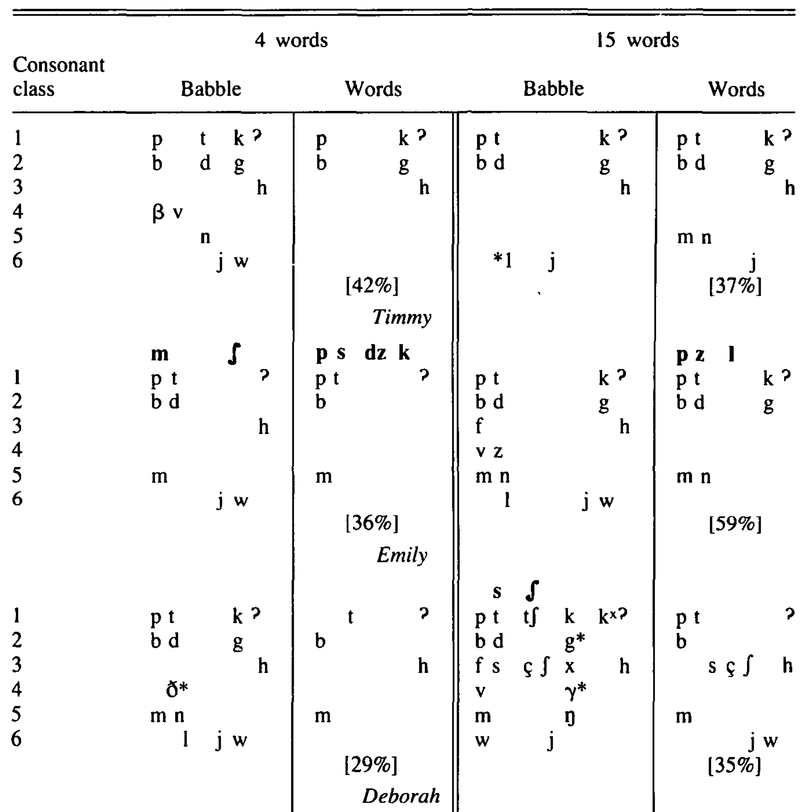

Chapter 5 Word forms: Production
5.1 Chapter overview
In the previous chapter, we looked at children’s knowledge of word forms by studying how they perceive the sound patterns of words and how they recognize familiar or newly-learned words. In this chapter, we continue to examine the development of word forms, but this time, focusing on how children produce words.
If you have heard a toddler speak, you may know that they do not always say words like adults. They may say [pun] for spoon, [ɛfən] for elephant, and [ɡɔɡi] for doggy. Is this because they are unsure of what some of the sounds in these words are? Or do they know what the words should sound like, and yet cannot help but say them in a different way? Put it differently, are the lexical representations or remembered forms children use to produce words different from adults’? Or are the representations fairly adultlike but the productions differ from them for other reasons? If so, what are the reasons? These are the questions that we will address in this chapter.
5.2 The beginning of word production
5.2.1 The emergence of first words
But first, let us see when infants typically begin to produce words. By “words” in this context, we are talking about a stable phonetic form that more or less matches an adult word in both form and meaning (e.g., [bɔ] for a ball). There is considerable variability across individuals in when they produce such a form for the first time, with some typically-developing children uttering their first words as early as 9 months, and others not until about 15 months (Barrett, 1983; Stoel-Gammon, 2011). Because the production of first recognizable word is such a noticeable event from the perspective of an adult observer, there is a tradition in the literature to refer to the periods before and after the production of first words as prelinguistic and linguistic, respectively. Intuitive though this distinction may be, it can be misleading in that it implies there is a sudden qualitative change in the child’s linguistic knowledge state when they say their first words. What we have seen in the previous chapters amply shows that this is not true. The period between 9 and 15 months witnesses a range of incremental changes in infants’ abilities to perceive phonological contrasts and recognize words as mappings between forms and meanings.
More importantly, the production of first words is in itself a gradual process. Prior to first words, infants produce various types of vocalizations that show some, though not all, of the key properties that define adultlike words. For instance, they often grunt as they try to reach for something. Such vocalizations, known as call sounds (Werner & Kaplan, 1984), are unlike real words as their sound-meaning mappings are not completely arbitrary, but they exhibit some wordlike quality in the sense that they signal intentions through stable sound expressions. Infants also produce phonetically stable forms with relatively consistent meanings or functions that do not correspond to those of adult words. For example, one of the children studied in Stoel-Gammon & Cooper (1984) used the phonetic form [diː] to express interest (as in “Look at that!”). Another child had an all-purpose name, [didi], which was also used as a request form. These forms, sometimes called pseudo-words, are not attempts to produce words spoken by adults, but they do represent arbitrary sound-meaning mappings. First words are produced following and often amid such call sounds and pseudo-words. To use a phrase from Vihman, Velleman, et al. (1994), they have “ragged beginnings”.
5.2.2 Continuity between babbling and first words
Another important aspect of the production of first words is its close relationship with babbling. The onset of first words does not mark the end of babbling, which children continue to produce usually until about 18 months. For several months, therefore, babbling coexists with meaningful word production and disappears only gradually. Babbling is different from word production in form as well as function. It lacks the sound-meaning mappings that characterize words, and it can sometimes be much longer in length than typical first words. However, babbling and first word productions share some important form characteristics. Babbles around 6 and 7 months contain a high proportion of oral closures that resemble stops, nasals, and glides, which are also predominant in first word production (Oller et al., 1976). Babbles also tend to have a closure-phonation pattern, which is equivalent to a consonant-vowel (CV) sequence that is frequently found in first words (e.g., daddy, mommy, bye, hi, baby).
These similarities indicate that babbling and first word productions are subject to the same articulatory constraints. They also suggest that babbles may be vocal precursors to early word production (Stoel-Gammon & Cooper, 1984; Vihman et al., 1985). Consistent with this idea, the earlier infants start babbling and the more CV syllables they produce in babbling, the earlier they begin to produce words (McGillion et al., 2017; Stoel-Gammon, 1992). Furthermore, the timing of the onset of babbling and the range of consonant-type closures produced during babbling are both predictive of the number of words children produce around 1.5 years of age (McCune & Vihman, 2001; McGillion et al., 2017).
One way to explain these connections is that canonical babbling can function as practiced CV syllables that serve as building blocks for producing similar-structured word forms. Thus, as Stoel-Gammon (2011) exemplifies, “the babble [mama] at age 7 months can become the word mama at age 10 months, and non-meaningful [ba] at age 8 months can later signal the word ball” (p. 8). Babbling also presents opportunities for infants to explore and learn the relationship between the kinetic movement and tactile sensations associated with certain articulatory gestures on the one hand and the resulting sounds produced by those gestures on the other. The auditory-articulatory feedback loop created through this link can then be applied to words infants hear in the ambient language (Vihman, 1991). The infant’s attention may even be drawn to certain words, such as mommy and baby, which are the most readily reproducible by application of the auditory-articulatory connections developed through babbling.
This process may be facilitated by caregivers’ responses to infant vocalizations. For instance, mothers of 7- to 10-month-olds are more likely to respond with interactive vocal responses, particularly acknowledgements (e.g., “mmm-hmm”, “oh really?”), when infants produced CV sequences than when they only produced vowel-like sounds (Gros-Louis et al., 2006). Infants with mothers who give this type of differential feedback to their babbling generally produce a larger number of words at 15 months (Gros-Louis et al., 2014). Moreover, when mothers immediately respond to the babbling of their 9-month-old infants with models of vocal production that contain resonant vowels and CV patterns, the infants are more likely to incorporate these features in their vocalization (Goldstein & Schwade, 2008). In this way, babbling that approximates word forms may be reinforced by caregiver responses, paving the way for first word production.
All of this shows that first words do not emerge out of nowhere, but crystallize through gradual development in infants’ capacity to understand the symbolic use of fixed sound forms to signal meaning and to articulate the speech sound patterns that make up word forms.
5.2.3 Characteristics of first words
Unlike word recognition, which is largely studied through laboratory experiments, children’s production of words is mostly examined using data from naturalistic contexts, typically collected from longitudinal recordings of child-adult interactions or parental reports of children’s word production (see Box 5.1). Children hear hundreds of different types of words regularly spoken around them, but tend to produce certain types of words first. By examining these words, we can get insights into what factors matter in early word learning—particularly those related to the sound patterns of words.
But before we discuss the phonological profile of first words, let us look at other characteristics of early words. A large proportion of 50 or so words that children produce first are common nouns (e.g., leg, car), verbal routines (e.g., bye, no), “people” terms (e.g., mommy, baby), or sound effects (meow, vrrm) (Caselli et al., 1995). Within each of these categories, the more frequently a word is heard, the more likely it is to be produced by the child (Goodman et al., 2008). There are good reasons why these words are among those that are learned and produced first. The sound-meaning mappings for nouns and sound effects are more transparent than those of categories such as verbs and adjectives because many nouns refer to concrete static objects, and sound effects resemble the sounds produced by their referents. Verbal routines and terms for people are functionally important in the social life of an infant. All other things being equal, frequently heard words are more memorable than those heard infrequently.
- Box 5.1: Parental report of children’s knowledge of words
- Caregivers, especially parents, are best placed to observe children’s ability to spontaneously produce words as they tend to spend a large amount of time with them. The most widely used tool to collect information from parents about the words children produce (and comprehend) is the MacArthur-Bates Communicative Development Inventory (CDI) (Marchman & Dale, 2023). The MacArthur-Bates CDI is a standardized questionnaire that consists of a list of words children of different ages are likely to know. The CDI comes in three versions, each designed for use with 8- to 18-month-olds, 16- to 30-month-olds, or 30- to 37-month-olds. The person completing the questionnaire indicates whether their child “understands” or “understands and says” each word on the list. It is currently available for over 100 languages and dialects. Some of the data collected through the MacArthur-Bates CDI have been archived at Wordbank, an open-access database that allows researchers to browse and access data from a large number of children. The figure below shows how the number of CDI words produced by monolingual English-learning children increases from 8 to 18 months.

Figure 5.1: The number of words on the MacArthur-Bates CDI produced by English-learning 8- to 18-month-olds. Separate lines show estimates for deciles (the least productive 10% to the most productive 10%). The 50% line represents the mean. The 90% line represents the top 10% children in terms of the number of words produced.
Turning now to the phonological characteristics of the word forms children produce first, we find common features that apply across children, and in some cases, across languages. First, words that appear early in children’s productive vocabulary tend to be shorter in length and have more neighbors (i.e., words that are phonologically similar to others) (Carlson et al., 2014; Maekawa & Storkel, 2006; Storkel, 2004). These properties are likely related to how phonological memory is used in learning new words. Shorter words are easier to retain in memory (Baddeley et al., 1975), and new words can be remembered better if the child knows some similar-sounding words, which can be used to build the lexical representation of the to-be-learned words (Hoover et al., 2010).
It has also been demonstrated that infants tend to produce more words that begin with a stop, and words that begin with a labial sound: an observation reported in a range of languages, including Cantonese, Czech, Dutch, English, French, German, Japanese, and Swedish (De Boysson-Bardies & Vihman, 1991; Fikkert & Levelt, 2008; Fletcher et al., 2004; Locke, 1983; MacNeilage et al., 1999; MacNeilage et al., 2000; Stoel-Gammon, 1998; Stoel-Gammon & Peter, 2008). There appears to be a particularly noticeable tendency in English for infants to produce /b/-initial words. Among the 100 most frequently acquired first words in American English, 22% begin with /b/ (e.g., baby, ball, bottle balloon, bye-bye) (Stoel-Gammon, 1998), even though these words account for only about 8% of the words addressed to young children (Stoel-Gammon & Peter, 2008). A possible reason for this is that the production of stops is relatively undemanding because it involves oral closures that do not require the controlled movements of other manners of articulation such as fricatives and liquids. Labials are particulary accessible because they can be produced primarily with the movement of the jaw, which infants master before they gain full control of other other articulators, such as the tongue (MacNeilage et al., 2000). Words beginning with these “easy” sounds may be favored because they allow infants to coordinate breathing and phonation to initiate word production.
5.2.4 Summary: First words
The emergence of first words is a gradual process that builds on infants’ earlier vocal and perceptual developments. Before producing recognizable adult-like words, infants experiment with call sounds and pseudo-words, which show increasing symbolic use of sound and meaning. First words arise alongside continued babbling, which provides crucial articulatory practice and auditory–motor feedback that supports the formation of consonant–vowel patterns common in early words. Caregiver responses to these vocalizations further reinforce sound patterns that resemble real words. The first words children produce are typically short and similar to each other in phonological structure, probably reflecting both memory and articulatory constraints on early speech production.
5.3 Children’s early words and their targets
To understand how children learn to produce words like adults do, we need to study how children’s word production compares to the word form they are attempting to produce—the target word or adult target. This is typically done by analysing samples of spontaneous or elicited word production, recorded, transcribed, and organized into a corpus (See Box 5.2). This section reviews some of the key outcomes of this line of research and discusses their implications for the relationship between children’s early word productions and their target words.
- Box 5.2: Phonological data corpora of children’s production
- Corpora of phonological development contain transcribed samples of children’s speech production. These samples are collected through audio- and/or video-recordings of interactions between children and their caregivers or an experimenter. Recording sessions can be naturalistic (e.g., free play at home), semi-structured (e.g., selected toys are always present across participants to encourage children to name them), or fully-structured (e.g., children are asked to name objects or pictures). Data collection can be either longitudinal (i.e., the same children are recorded at different ages) or cross-sectional (i.e., different children are recorded as representatives of different age groups). Some corpora are freely accessible through a shared digital platform such as PhonBank. PhonBank comes with a software program, Phon (Hedlund & Rose, 2020), which allows users to search target phonological structures of interest, and then to examine the corresponding child forms through transcription-based or acoustic analysis.
5.3.1 Individualized sound-based target selection
As mentioned in the previous section, there is a general tendency for children to target adult words beginning in oral stops and bilabial sounds. But researchers have also noticed that children often show their own preferences for words that feature specific sounds or sound patterns. This individualized phonologically-determined selectivity was first reported by Ferguson & Farwell (1975). Between 11 and 14 months of age, one of the children they studied (called “T”) produced a number of words containing sibilant fricatives ([s], [z], [ʃ]. [ʒ]) or affricates ([ʧ], [ʤ]), such as shoe [ʃu], cheese [ʧiz], cereal [sirɪəl], ice [aɪs], juice [ʤus] and eyes [aɪz]. None of the other children in their study exhibited this pattern, suggesting that T was actively selecting to learn and produce words that contained sibilants, presumably because they were her favorite sounds.
Further research confirmed that this idiosyncratic selective bias reflects the types of sounds each child is proficient in producing. In a series of experiments, Schwartz & Leonard (1982), Schwartz et al. (1987), and Leonard et al. (1981) first identified the consonants each of their one-year-old participants would spontaneously produce. Then, for each child, they assembled two sets of made-up or rare words, one with words containing consonants that were produced by the child (“IN” words) and another with words containing consonants that were not produced (“OUT” words). In multiple sessions, the children were shown the assigned meaning of these words, which were either an object or an action (“Here’s an ofof”, “Watch me ket”), and then subsequently tested on whether they can recall the words when prompted (“What’s this?”, “What am I doing?”). The children produced IN words in greater numbers and in earlier sessions than OUT words. In a later study, Schwartz et al. (1987) added a third word category, “ATTEMPTED”, which was words that contained consonants that the child apparently tried to produce but only inaccurately. For instance, if, during the observation phase in the study, a child produced [bʌ], [ti], and [tʌn] for bus, see and sun, the consononant /s/ was considered to be an ATTEMPTED sound, and the child was trained on words containing /s/ as ATTEMPTED words alongside IN words (containing consonants accurately produced) and OUT words (containing consonants never attempted). The results showed that children were less likely to reproduce OUT or ATTEMPTED words compared to IN words, indicating that what matters is whether children can accurately produce the sounds in the words, not just whether they try to produce them at all. The main implication of these findings is that one-year-olds are aware of the sounds and sound patterns they can produce accurately, and select words that contain them against those that contain sounds they are still learning to produce.
How exactly does this happen? Perhaps children remember all sorts of words, including those that they cannot articulate well, but when it comes to production, they stick to those they know they can reproduce accurately. Alternatively, children may be more likely to learn a word they know how to produce, so their mental lexicon is biased toward words containing their favorite sounds or sound patterns. The latter possibility has been elaborated on in a hypothesis called the articulatory filter hypothesis (Vihman, 1993, 1996). According to the articulatory filter hypothesis, when infants motorically master the production of a certain sound, the articulation associated with that sound becomes a readily-available routine, called a Vocal Motor Scheme (VMS). A VMS serves as a filter that increases the perceptual salience of the same sounds in the speech they hear. As a result, word forms that consist of articulatorily familiar sounds stand out to infants, leading them to be remembered more readily. According to the articulatory filter hypothesis, VMSs can vary from one individual to another. This means that individual infants should attend to different types of word forms depending on what their own VMSs are.
This prediction has been tested with infants learning English and Italian (DePaolis et al., 2011; Majorano et al., 2014). In these studies, the researchers first examined the participating infants’ speech production in multiple play sessions and established the places of articulation of the stop consonants they could produce. When an infant consistently produced stops with a certain place of articulation (e.g., /p/ and /b/, or labial), those sounds were considered to be part of the child’s VMS. When these infants were shown to have one or two such VMS consonants (between 7 and 16 months), they heard passages containing novel words consisting of stops (e.g., /pabəp/, /tidɛt/, /kɔɡʊk/) in a Headturn Preference Procedure. The infants were tested on three different types of words, the actual tokens of which differed between individuals depending on their VMSs: Words containing a VMS consonant produced by the infant tested (“Own-VMS”), words containing a common VMS stop produced by other infants but not by the infant tested (“Other-VMS”), and words containing a fricative consonant that was rarely produced by the infants (“Non-VMS”). The results, shown in Fig. 5.2, revealed a complex developmental pattern for both English- and Italian-learning infants. Infants who were identified as having just one VMS consonant listened longer to passages containing the infant’s own VMS consonant (i.e., “Own-VMS”) than to those containing an “Other-VMS” consonant. However, infants who had two VMS consonants listened longer to passages containing an “Other-VMS” consonant than those with an “Own-VMS”. One way to interpret these outcomes is that when infants have learned how to consistently articulate one type of consonant, their attention is drawn to that particular sound in the linguistic input, hence word forms containing the sound. When they move beyond that phase and acquire two or more consonant types, they begin to attend to words that contain more unfamiliar sounds.
Figure 5.2: Looking times for novel words containing infants’ “Own-VMS”, “Other-VMS”, and “Non-VMS” consonants. Source: Majorano et al. (2014)
This apparent shift in infants’ perceptual attention from articulatorily familiar to unfamiliar sounds is consistent with another widely made observation. Infants’ productions of first words are fairly uniform in their phonological shape but surprisingly adultlike, whereas their later productions are more varied and less accurate (Ferguson & Farwell, 1975). This makes sense if infants are initially actively choosing to produce words they can accurately reproduce, but they gradually venture to attempt a phonologically wider range of word forms.
5.3.2 Sources of child-adult form deviations
When a word produced by a child deviates from the adult target in form, there could be two main reasons behind it. One is that the child’s lexical representation of the word is not quite the same as that of adult speakers. This may happen if the child has misperceived parts of the word, remembered some phonetic details of the word only vaguely, or stored the phonetic information in their memory in a format that is different from the adult target. The other reason is that the target word contains some sound patterns that the child still cannot produce. This may happen if certain aspects of the word forms are articulatorily challenging or not part of the sound patterns the child currently knows how to reproduce. As illustrated in Fig. 5.3, nonadultlike productions can be due to one or both of these two factors—nonadultlike lexical representations and limitations on producible forms.

Figure 5.3: A target word [spun] may be produced differently because of a nonadultlike lexical representation (Factor 1), limitations on producible forms (Factor 2), or both
The idea that children’s lexical representation could be encoded in a different format than adultlike representations needs further elaboration. This possibility is best illustrated with an example like the following, reported in Ferguson & Farwell (1975). In one recording session that lasted no more than half an hour, one of their one-year-old participants, K, attempted to produce the word pen, which she had just encountered. She produced it in 10 different ways.
- [mãᵊ]
- [ʸʌ̃]
- [dɛᵈⁿ̩]
- [hɪn]
- [ᵐbõ]
- [pʰɪn]
- [tʰn̩tʰn̩tʰn̩]
- [baʰ]
- [ᶁʱauᴺ]
- [buã]
It is impossible to come up with a set of “phonological processes” that explains how we get all these forms by replacing each of the ordered segments in /pɛn/. However, every one of the produced forms shares some phonetic characteristics with the target in having a bilabial sound (items 1, 5, 6, 8, and 10), a nasal or nasalized vowel (items 1, 2, 3, 4, 5, 6, 7, 9, and 10), an initial closure (items 1, 3, 5, 6, 7, 8, 9, and 10) or a final closure (items 3, 4, 6, 7, 9). It might be, therefore, that K knows that pen contains phonetic features (or perhaps articulatory gestures) associated with a bilabial closure, an oral stop, a nasal sound, a vowel, a coronal closure and so on, but is unsure about the exact combinations, order, or timing of them. As a result, each form produced by her contains some or all of these elements in different combinations.
While this extreme variability has probably something to do with the fact that K is still in the process of learning the word pen, we see a similar pattern in children’s productions of familiar words. For instance, the child P in Waterson (1971) produced the following forms, all with the structure [ɲVɲV] (ɲ = palatal nasal), when the target word contained a nasal:
- finger [ɲẽːɲẽ/ɲiːɲi]
- window [ɲeːɲeː]
- another [ɲaɲa]
- Randall [ɲaɲø]
It appears that P is using the structure [ɲVɲV] to represent any word that contains a nasal somewhere. So the nasal element in the target word is encoded in the lexical representation, but using a fixed format that disregards its exact quality or position within the word structure. The velar nasal [ŋ] (in finger) and the alveolar nasal [n] (in window, another, and Randall) in the targets are both expressed as a palatal nasal [ɲ], and the nasal sound always occurs in the same positions. These observations have led some researchers to submit that children sometimes use “gestalt” or holistic lexical representations that consist of phonetic or gestural information associated with the whole word as a unit, rather than its segmental components (Ferguson & Farwell, 1975; Studdert-Kennedy & Goodell, 1995; Waterson, 1971).
5.3.3 Systematic patterns of deviation
In the literature, several patterns of child-target deviation have been frequently discussed because they offer insights into the question of whether mismatches between the target and the child form are due to nonadultlike lexical representations or limitations of producible forms. Below, we will look at three well-known patterns of deviation and the debate over their sources.
5.3.3.1 Cluster reduction
Cluster reduction refers to children’s production of a single consonant for a consonant cluster, a sequence of consonants, particularly at the beginning of a word. Some examples are given in Table 5.1.
| Language | Child (age in months) | Target (orthography) | Target (phonology) | Child form | Gloss |
|---|---|---|---|---|---|
| English | G (27-33) | clean | /klin/ | [kin] | |
| draw | /dɹɔ/ | [dɒ] | |||
| friend | /fɹɛnd/ | [fɛn] | |||
| snow | /sno/ | [so] | |||
| spoon | /spun/ | [bun] | |||
| French (Quebec) | Clara (19-21) | fleur | /flœʁ/ | [βœː] | flower |
| brisé | /bʁize/ | [bœːçiː] | broken | ||
| pleure | /plœʁ/ | [pœː] | (s/he) cries | ||
| Theo (28-29) | clé | /kle/ | [ke] | key | |
| brisé | /bʁize/ | [pɪz̥e] | broken | ||
| train | /tχɛ̃/ | [kɛ] | train | ||
| Hebrew | various (22-36) | כְּבִישׁ | /kviʃ/ | [viʃ] | road |
| גְּלִידָה | /glida/ | [gida] | ice cream | ||
| תְּמוּנָה | /tmuna/ | [muna] | picture | ||
| שְׂמִיכָה | /smixa/ | [mixa] | blanket | ||
| Portguese | Inês (17-22) | crème | /krɛmi/ | [kɛ] | creme |
| abre | /abrɨ/ | [abi] | open (imperative) | ||
| praia | /prajɐ/ | [pajɐ] | beach | ||
| triciclo | /trisiklu/ | [tikiko] | bicycle |
🔈 Listen to these samples of word productions by a two-year-old girl learning English. They all involve cluster reduction. Can you guess what the target words were? You will find the answers at the end of this chapter.
Cluster reduction is an extremely common phenomenon. According to one estimate, it is observed in 93% of English-speaking children between 18 and 21 months and 51% of those between 26 and 29 months (Preisser et al., 1988). It has been reported for several languages including Czech (Greenlee, 1974), Dutch (Fikkert, 1994), English (McLeod et al., 2001a; Smit, 1993), French (Kehoe et al., 2008; Rose, 2000), German (Lleó & Prinz, 1996), Greek (Kappa, 2002), Hebrew (Ben-David & Bat-El, 2016), Polish (Łukaszewicz, 2007), Portuguese (Freitas, 2003), Serbian (Greenlee, 1974), Slovenian (Greenlee, 1974), and Spanish (Lleó & Prinz, 1996).
There is a general consensus among researchers that cluster reduction is primarily caused by some type of limitations on the forms that young children can produce. A cluster of consonants is articulatorily and structurally more complex than a single consonant, which may be beyond what the child learner can produce at that stage of development, even when the child knows that the word contains a sequence of consonants. Seen this way, there is no need to seek additional explanations from other factors.
Even so, it has been argued that certain cases of cluster reduction have representational roots. One such case has been identified by Macken (1992) in her analysis of data reported in Smith (1973). Smith’s subject, Amahl, produced the forms given in Table 5.2.
| Target | Child form before 32 months | Child form after 32 months |
|---|---|---|
| train | [d̥eːn] | [treɪn] |
| tree | ̥[d̥iː/tiː] | [triː] |
| chalk | [tɔːk] | [tɔːk]/[trɔːk] |
| chocolate | [tɔoklit] | [tɔklit]/[trɔklit] |
Before 32 months, Amahl’s productions of /tr-/ targets, train and tree, had a singleton consonant [t] or [d̥] (the sound [d̥] is an alveolar stop with a longer VOT than [d], somewhere between [t] and [d]). These look like typical examples of cluster reduction. At the same time, the initial affricate /ʧ/ in words like chalk and chocolate was also produced as a stop (i.e., [t]). These look like cases of stopping. However, when Amahl began to produce a two-consonant cluster [tr] for /tr-/ targets, he also started producing the same cluster for /ʧ/-initial words (e.g., [trɔk] for chalk, [trɔklit] for chocolate). What is happening here? Macken’s explanation is that, because /tr/ is often produced with affrication by adult speakers, Amahl initially misperceived it to be the same as /ʧ/. When he realized at 32 months that what sounded like /ʧ/ was actually /tr/, he corrected his lexical representations for train and tree but overapplied that change to chalk and chocolate, thinking that those /ʧ/-initial words were also /tr/-initial. During the phase preceding 32 months, then, the production of /tr-/ targets as [t/d̥] reflects Amahl’s failure to distinguish /tr/ from /ʧ/ in the representations. The implication of this example is that even when the child’s production appears to be a product of the limitations on what children can produce, it could also involve nontargetlike representations.
5.3.3.2 Consonant harmony
Let us now turn to another phenomenon in early word production, known as consonant harmony (or partial reduplication). In consonant harmony, different target consonants in the same word become more similar to each other in the child’s production. The most well-studied case is major place harmony, when target consonants with different major places of articulation are produced with the same place of articulation. By a major place of articulation (PoA), we mean one of the broad areas in the oral cavity where a sound is articulated, namely the labial area (e.g., /p/, /b/, /m/), the coronal area (e.g., /t/, /d/, /n/) and the dorsal area (e.g., /k/, /g/). Other places of articulation, such as the glottis (e.g., /h/), do not seem to be participate in consonant harmony. Some examples are given below in Table 5.3.
| Language | Child (age in months) | Target (orthography) | Target (phonology) | Child form | Gloss |
|---|---|---|---|---|---|
| English | Amahl (26-32) | doggie | /dɔɡi/ | [ɡɔɡiː] | |
| duck | /dʌk/ | [ɡʌk] | |||
| table | /tebəl/ | [ḅeːbu] | |||
| nipple | /nɪpəl/ | [mibu] | |||
| shack | /ʃæk/ | [ɣæk] | |||
| French (Quebec)) | Clara (15-23) | debout | /dəbu/ | [bɑbuː] | standing |
| cheval | /ʃəval/ | [vævæl] | horse | ||
| Gaspard | /ɡaspɑʁ/ | [bapæː] | (name) | ||
| café | /kafe/ | [pəfɛ] | coffee | ||
| gâteau | /ɡɑto/ | [tæto] | cake | ||
| Caillou | /kaju/ | [tajæ] | (name) | ||
| Greek | various (24-29) | κάνει | /kani/ | [tani] | do (pres. sg.) |
| δαγκώνει | /ðaɡoni/ | [ɡaɡonɛ] | bite (3rd pres. sg.) | ||
| δασκάλα | /ðaskala/ | [ɣakala] | teacher | ||
| ποτήρι | /potili/ | [totili] | glass | ||
| Estonian | Virve (16-22) | kott | /kotː/ | [totː] | bag |
| tegi | /teki/ | [keki] | did (it) | ||
| muna | /muna/ | [nuna] | egg | ||
| seep | /seːp/ | [feːp] | soap | ||
| kamm | /kamː/ | [pamː] | comb | ||
| kena | /kena/ | [keŋa] | nice |
🔈 Listen to these samples of word productions by a one-year-old girl learning English. They all involve consonant harmony. Can you guess what the target words were? You will find the answers at the end of the chapter.
To illustrate with the English examples in Table 5.3, in both the target words doggie and duck, the first consonant is a coronal stop (/d/) and the second one a dorsal stop (/g/ or /k/). But the child produces the first consonant as a dorsal [g] instead of a coronal. As a result, both consonants in the child’s form are dorsal. Similarly, the first consonant /t/ in table, a coronal stop, is produced as a labial stop [b], like the second consonant [b]. The first consonant /n/ in nipple, a coronal nasal, is produced as a labial nasal [m], like the second consonant [p]. And finally, in shack, where the first consonant is a coronal fricative /ʃ/ and the second one is a dorsal stop /k/, the first consonant is also produced as a velar fricative [ɣ], a sound that is not part of the English consonant inventory. In all of these examples, the consonants are not next to each other but separated by a vowel. For this reason, this pattern of word production has been characterized as assimilation (or harmony) of major PoA “at a distance”. In the majority of cases, the effect is “anticipatory”; that is, it is the earlier consonant that adopts the place of the later consonant rather than the other way around. There is also a tendency for the affected consonant to be coronal, which becomes labial or dorsal, depending on the PoA of the other consonant.
Child consonant harmony has been reported in many languages, including Czech (Vihman, 1978), English (Smith, 1973; Vihman, 1978), Estonian (Vihman, 1978), Dutch (Fikkert & Levelt, 2008), German (Berg & Schade, 2000), Japanese (Vihman, Ota, Keren-Portnoy, Choo, et al., 2023), Slovenian (Vihman, 1978), and Spanish (Vihman, 1978). However, the overall prevalence is not very high. Vihman (1978) examined samples from 13 different children across 6 languages, and only found 3 children who produced consonant harmony in more than 25% of the target words with different consonants. Children learning certain languages, most notably Mandarin (Vihman, 1978; Vihman, Ota, Keren-Portnoy, Choo, et al., 2023), scarcely produce consonant harmony. Nevertheless, it has received a great deal of attention in research on children’s word production, because it eludes a straightforward account.
Broadly speaking, there have been two approaches to explainining consonant harmony in children’s production. One way is to appeal to the idea that children fail to or cannot produce word forms that contain consonants with different PoAs, even when they know the exact PoAs of the consonants in the target words. For some analysts, these limitations come from phonological rules or constraints that define the output structures that are available to the child at a given moment in development (Goad, 1997; Menn, 1978; Pater & Werle, 2003; Smith, 1973). An example of such a mechanism is Agree, a phonological constraint that requires two successive consonants to have the same major PoA (Pater & Werle, 2003). Further specifications of these rules or constraints can capture the frequent patterns mentioned above, such as the tendencies for coronal sounds to be affected by dorsal or labial sounds and the direction of the harmony to be anticipatory. For other researchers, consonant harmony is not a product of rules or constraints on the word forms but a type of speech error (Berg & Schade, 2000; Hansson, 2010). According to this line of explanation, children know that consonants in some words have different PoAs, but they end up producing them with the same PoA due to immature speech planning and execution skills. As they are pronouncing one consonant in the word, they are already planning the articulation of the following consonant. But becuase they cannot fully separate the two processes, the execution of the first consonant is influenced by the PoA of the second consonant (Hansson, 2010).
Other researchers, in contrast, have explored the possibility that the consonants that undergo harmony within a word are learned, or encoded, as having the same PoA in the first place. In one version of this approach, during the earliest stage of word production, children’s representations can have only one place feature per word (Fikkert & Levelt, 2008; Levelt, 1994). This “One word; One PoA feature” stage is akin to the idea we discussed above that early word representations are “holistic” in the sense that phonological specifications are made to the word as a whole. Fig. 5.4 illustrates how the Dutch word poes /pus/ (‘cat’) may be represented in the child’s mental lexicon. Because the entire word is associated with the place feature [labial], the second consonant is produced as a labial fricative [f] instead of a coronal fricative [s]. Crucially, it is not only the consonants that share the labial feature. The vowel /u/ is also considered to have a labial feature because of its lip-rounding quality.
Figure 5.4: The representation and production of Dutch target word /pus/ (‘cat’) during the “One word; One PoA feature” stage in the model by Fikkert & Levelt (2008).
Supporting evidence for this particular version of a representation-based account comes from examples like prik /prɪk/ ‘injection (Dutch)’ produced as [tɪt]. Here, there is consonant harmony in the sense that the two consonants in the production have the same major PoA, coronal, but neither one of the consonants /p/ or /k/ in the target is coronal. So why are the two consonants both coronal in the production ([tɪt])? The reason, according to Fikkert & Levelt (2008), is that the coronal feature comes from the vowel /ɪ/, which is produced with the tongue tip in the coronal region. The consonants are simply sharing that PoA feature with the vowel.
But how could children’s early representations be missing information that differentiates consonants with different PoAs? One suggestion is that children who produce consonant harmony are still learning to perceive PoA differences, and the failure to accurately detect them results in representations that have fewer PoA specifications than expected (Fikkert & Levelt, 2008; Levelt, 1994). An issue with this explanation is that production patterns analogous to consonant harmony can be induced in much older children, who are unlikely to have such perceptual problems. When 4- to 9-year-olds are taught real names of animals they are not familiar with, they have few problems repeating the models provided by the adult investigator (Aitchison & Chiat, 1981). Yet, when they are later asked to recall these names, some of the children produce forms that are strikingly similar to young children’s consonant harmony, such as kudu recalled as [kəguː], [tuːdu] or [kuːkuː], racoon as [kəkuːn] or [ɡəkuːn], and yak as [kaːk]. Their generally accurate immediate repetitions show that the children had correctly perceived the critical PoA differences during the learning phase. The problem, therefore, appears not to be at the level of perception but at some level of memory. When confronted with learning new words, our memory seems to get overloaded, failing to encode all the information in our lexical representation. Young children may resort to consonant harmony because remembering sequences with identical or near-identical elememts generally reduces the amount of information that needs to be retained in memory (Ota, 2024) or because it is specifically easier to remember word forms for the purpose of speech production when consonants do not involve different articulatory features (Vihman, Ota, Keren-Portnoy, Choo, et al., 2023).
The upshot of this discussion is that it is often difficult to determine whether it is nonadultlike representations or limitations on producible forms that primarily contribute to child-adult deviations in word production. Moreover, there are several potential sources of each of these factors; nonadultlike representations may be caused by misperception or memory constraints, and production limitations may be consequences of phonological rules/constraints or speech planning/execution errors. Clear-cut evidence to differentiate different combinations of these factors is difficult to come by.
5.3.3.3 Syllable omission or ‘truncation’
The third phenomenon in early word productions we will look at is the omission of syllables, also known as truncation. Some examples are given in Table 5.4.
| Language | Child (age in months) | Target (orthography) | Target (phonology) | Child form | Gloss |
|---|---|---|---|---|---|
| English | various (22-27) | balloon | /bəlún/ | [bʷun] | |
| potato | /pətʱeɾo/ | [tʱedɒ] | |||
| kangaroo | /kæ̀ŋɡərúː/ | [wuː] | |||
| helicopter | /hɛ́ləkɑ̀ptɚ/ | [kʱótɚ] | |||
| avocado | /ɑ̀vəkɑ́ɗo/ | [kʱɑ́ɡo] | |||
| elephant | /ɛ́ləfənt/ | [ɑ́fɪn] | |||
| Spanish | Miguel (18-22) | conejo | /koˈnexo/ | [ˈðeʁo] | rabbit |
| pelota | /peˈlota/ | [ˈbɔdɑ]/[ˈlɔda] | ball | ||
| mariposa | /maɾiˈposa/ | [ˈboza] | butterfly | ||
| José (19-23) | adrilla | /aɾˈðiʎa/ | [ˈzijɐ]/[ˈdihœ] | squirrel | |
| espada | /esˈpaða/ | [ˈpaðː]/[ˈpadɐ]/[ˈpalɐ]] | sword | ||
| Hebrew | SR (13-17) | תַּפּוּחַ | /tapúax/ | [pú.ax] | apple |
| עֲגָלָה | /agalá/ | [igjá] | pram | ||
| גּוֹרִילָה | /goríla/ | [ɡíla] | gorilla | ||
| קֻבִּיָּה | /kubijá/ | [ijá] | building block | ||
| אֶפרוֹחַ | /efróax/ | [poáx] | chick | ||
| נְשִׁיקָה | /neʃíka/ | [ka] | kiss | ||
| Japanese | Hiromi (15-21) | バナナ | /bánana/ | [bába] | banana |
| 頭 | /atáma/ | [áːpa] | head | ||
| いない | /inái/ | [nai] | not here | ||
| カンガルー | /káŋgaɾɯː/ | [káːjɯ] | kangaroo | ||
| 難しい | /mɯzɯkaɕiː/ | [kaʧi] | difficult |
🔈 Listen to these samples of word productions by a two-year-old girl learning English. They all involve truncation. Can you guess what the target words were? You will find the answers at the end of the chapter.
Like cluster reduction, truncation is very common. In elicitation tasks (where children are asked to name an object depicted in a picture), nearly 90% of English-speaking children exhibit truncation (D. James, 2006). While occurrences drop after age 4, syllable omission in some words can be observed in typically-developing children as old as 7 years. It has been reported in a range of languages, including Dutch (Wijnen et al., 1994), German (Lleó, 2002), Hebrew (Adam & Bat-El, 2009), Japanese (Ota, 2003), and Spanish (Lleó, 2002).
The basic question here is whether children omit syllables in some target words because they do not know that those syllables ought to be there (i.e., the omitted syllables are missing from the lexical representations), or they know that the omitted syllables should be there but cannot pronounce them on account of certain limitations on their producible forms.
Let us first look at some observations that suggest that the omitted syllables may be missing from the representations. You may notice by looking at the data in Table 5.4 that syllables that are stressed/accented or in the final position are usually preserved in the child’s production. In other words, the omitted syllables are typically unstressed or nonfinal. As Fig. 5.5 shows, this is a very robust pattern in children learning English as well as other languages.

Figure 5.5: Mean proportion of syllables omitted by English-speaking children (17-23 months) as a function of stress and position for target words with two or more syllables. Source: Echols & Newport (1992)
It has been argued that this pattern reflects a perceptual bias that draws the infants’ attention to stressed or final syllables in the incoming speech (Echols, 1993; Echols & Newport, 1992). Stressed syllables are more noticeable than unstressed ones because they are usually longer in duration and greater in amplitude. Final syllables are also more perceptually salient because they tend to occur in a phrase-final position, such as the end of an utterance, where they are often lengthened and also likely to be retained in memory as the last thing to be heard of a word. The flipside of this is that unstressed or nonfinal syllables are less detectable and, for that reason, may not be reliably included in the child’s representation of the word. Under this interpretation, children say [tedo] for potato because the initial unstressed syllable is either missing from their representation of the word or only weakly represented.
This account, however, is challenged by at least three observations. One is that when children produce a word with fewer syllables than its target, they sometimes include some segmental features of the omitted syllable. In Table 5.4, we see that the child produces balloon as [bʷun]. Although the initial unstressed syllable appears to be omitted, the onset of that syllable is retained in the production. The child must have perceived the initial syllable to some extent. Another issue is that the omission of syllables can be variable for the same word. Wijnen et al. (1994) observed that in a single recording session at 22 months, a Dutch-learning child produced the target word banaan /baːˈnaːn]/ ‘banana’ in three different ways: [naːn] (2 tokens), [maːn] (5), and [mənaːn] (2). Although the initial syllable is omitted in some renditions of the word ([maːn], [naːn]), it appears in others ([mənaːn]). The omission of the initial syllable is therefore unlikely to be due to its absence in the lexical representation. Thirdly, the perceptual account cannot explain why certain unstressed nonfinal syllables are more likely to be omitted than others. When English-learning two-year-olds are asked to repeat made-up words such as zámpakasìs and paźamkas̀is—the acute accent indicates the location of primary stress, the grave accent, the location of secondary stress—they omit the second weak syllable from zámpakasìs (as in zámpa_sìs) more frequently than the first one (zám_kasìs), and the first weak syllable from paźamkas̀is (as in *__źamkas̀is) than the second one (paźam__s̀is*) (Gerken, 1994). It is not immediately clear why one of the two weak syllables is more likely to be omitted than the other if it is solely about perceptual salience.
As an alternative, several researchers have put forward explanations of truncation in early word production based on the notion that the word forms that young children produce are constrained in size and shape (Demuth, 1995, 1996; Fikkert, 1994; Gerken, 1994; Pater, 1997). Although the theoretical backgrounds and technical details of these models differ, they all share the core assumption that multisyllabic words are accurately represented in the lexicon but undergo truncation because some syllables fall outside the phonological structures available to the child in production. These structures, or output templates, are defined by a phonological unit known as a foot, a unit that groups one or two syllables to generate a structure that underlies prosodic phenomena such as stress. For the purpose of the discussion here, it suffices to understand the foot in English consists of a strong syllable (corresponding to a stressed syllable) followed by an optional weak one: “S(w)”. The idea is that children go through a stage of development when the word forms they can produce are restricted to those that fit one (and later, two or more) of these S(w) units. Fig. 5.6 illustrates how this S(w) foot template, imposed on the otherwise correctly remembered word form, leaves some syllables out of the producible structure. A stressed syllable in the target is matched with the “S” part of the S(w) unit, and if there is a weak syllable immediately following the stressed syllable, it is matched with the “w” part of the unit. Any remaining syllables fall outside this template and will be omitted from the production. In wSw targets such as potáto and wS targets such as balloon, it is the initial weak syllable that is not produced. Where there are two weak syllables between two stressed ones (SwwS), as in zàmpakasís, it is the second one, rather than the one immediately following the stressed syllable, that is omitted. These predictions are supported by observational and experimental data.

Figure 5.6: Predictions of the foot template account. Circled syllables do not fit the S(w) template
There are problems with this account, though. As Fig. 5.6 shows, in target words with the structure Sww (e.g., elephant), the S(w) template account predicts that the final syllable should be omitted (i.e., ele_). But it is typically the weak syllable following the stressed syllable that is omitted instead (e_phant). To explain the retention of the final syllable using output constraints only, we need to give the final syllable a special structural status separately from the S(w) template. Another problem in arguing that there are limitations on the phonological structure of target words that children can produce is that omission of syllables is more likely to happen to words that are less familiar to the child. For instance, individual Japanese words that are more frequent in the speech addressed to children are less prone to truncation than infrequently heard words, even when they have the same structure (Ota, 2006). If truncation is due to limitations on the size and shape of producible words, we expect it to apply uniformly across words of the same structure. Finally, there are segmental effects on truncation that indicate that the omission of syllables involves how syllables are perceived in the target words. In words with a SwS or Sww structure (e.g., crocodile, elephant), children are more likely to omit the first weak syllable when the consonant between the stressed and unstressed syllable is a sonorant (more resonant or vowel-like consonant, such as a nasal, liquid, or glide), than when it is a obstruent (less resonant or vowel-like consonant, such as a stop, fricative, or affricate) (Kehoe & Stoel-Gammon, 1997a, 1997b). Thus, children are more likely to omit the weak syllable from dinosaur (the first and second syllables are divided by /n/) than from crocodile (divided by /k/). The most likely reason for this is that, because a sonorant consonant is vowel-like, it blurs the boundary between the stressed initial syllable and the weak second syllable in words like dinosaur and elephant (Kehoe & Stoel-Gammon, 1997b; Wijnen, 1988). The two initial syllables in these words might, therefore, be misperceived as a single syllable (i.e., [daɪn.sɔr], [ɛl.fənt]). In contrast, obstruent consonants, which are not vowel-like, can demarcate the syllable boundary clearly and prevent such a misperception.
Studies on truncation then present evidence for both nonadultlike representations and limitations on producible word forms. Nonsalient syllables and syllables bounded by a sonorant consonant tend to be omitted, suggesting that syllables prone to misperception may be absent or at least weakly presented in the young children’s mental lexicon. Frequency effects—syllable omission is less likely to happen to frequently heard words—also indicate the involvement of representation in truncation. On the other hand, the overall shape and size of the target also have predictable effects, and the same target words can sometimes be heard with or without syllable omission, both indicating that some process at the level of production rather than representation is also at work.
5.3.4 Summary: Early words and their targets
Analyses of children’s early word productions reveal that their relationship to adult target forms reflects both how they mentally represent words and what sound patterns they can produce. Early in development, children tend to select words containing sounds they can already produce, suggesting an awareness of their own articulatory abilities. The articulatory filter hypothesis explains this selectivity as a bias toward perceiving and learning words that include producible sounds, which gradually shifts as children gain control over a broader sound repertoire.
When children’s productions deviate from adult targets, these mismatches can arise for two main reasons: (1) their lexical representations differ from the adult ones due to misperception, memory limitations, or nonadultlike encoding, or (2) they face constraints on producible forms stemming from immature speech planning skills or developing systems of phonological structures. Classic phenomena such as cluster reduction, consonant harmony, and truncation illustrate how these factors interact. In many cases, both representational and production-based factors are needed to account for the variability and systematicity observed in children’s early speech.
5.4 Accounts of word production and early representations
Up to this point, we have examined children’s word production focusing on the relative contributions of nonadultlike representations and limitations on producible forms. In the final section of this chapter, we will review theoretical models that attempt to provide an integrated account of why children’s early word productions are different from their adult targets and how they become more adultlike during the course of development.
5.4.1 Grammatical approach
One approach to early word production is built around the idea that the relationship between the adult target word and the child’s production is mediated by a phonological grammar. A phonological grammar is the component of the speaker’s linguistic knowledge that determines what types of phonological structures are possible, or “wellformed”, in the language. We might say, for instance, that the phonological grammar of English tells us that the hypothetical form /zlopk/ cannot be an English word, or is “illformed”, because it starts with /zl/ and ends in /pk/, neither of which is possible in the language. Grammatical models of early word production apply the same principle to explaining why young children’s word forms look the way they do. Central to this approach is the idea—adopted from Generative Phonology—that phonological forms, such as words, have two levels of representations: the underlying representation, the form that is stored in the mental lexicon, and the surface representation, the form that corresponds to what we perceive or (attempt to) produce. It is the job of the phonological grammar to tell us how the underlying representation should be mapped onto the surface representation. To explain this mapping relationship, most models of Generative Phonology use either a set of rules that convert elements in the underlying representation to corresponding elements in the surface representation or a set of ranked constraints that determine which aspects of the surface representation and the correspondence between the two representations should be prioritized.
How does this explain children’s word productions? The basic proposal, first made by Smith (1973), is that the adult target form and the form produced by the child stand in the same relationship as the underlying representation and surface representation. This is illustrated in Fig. 5.7. First, the child constructs the underlying representation based on their perception of the adult form. Unless there is clear evidence that some aspects of the target word have been misperceived by the child, the underlying representation is taken to be a fairly accurate copy of the phonetic form of the adult word form. Next, the child finds out what the surface representation is. The answer is given by the child’s developing grammar, which determines how the surface representation must reflect the underlying form and the structural requirements of the current grammar.
![A grammatical model of early word production. The perceived target (adult) word form ([klin] for 'clean' in this example) is stored in the mental lexicon as the underlying representation. The phonological grammar maps the underlying representation onto the surface representation, which may be different from the underlying representation. The surface representation is what the child attempts to produce.](images/GrammaticalModel.png)
Figure 5.7: A grammatical model of early word production. The perceived target (adult) word form ([klin] for ‘clean’ in this example) is stored in the mental lexicon as the underlying representation. The phonological grammar maps the underlying representation onto the surface representation, which may be different from the underlying representation. The surface representation is what the child attempts to produce.
In this particular example, the target word clean has undergone cluster reduction in the child form. But how did the grammar map /klin/ onto [kin]? To see how this happens, let us walk through this process using Optimality Theory (OT), a constraint-based model of phonological grammar in Generative Phonology (Prince & Smolensky, 2004) that has been often employed in current grammatical accounts of early word production. OT has two types of formal constraints: Markedness constraints and faithfulness constraints. Markedness constraints state what types of phonological structure are required or avoided in the surface representations. Faithfulness constraints state how to map one representation onto another, such as the underlying representation and the surface representation. The constraints relevant to our discussion here are given below, with informally stated definitions.
- NoComplexOnset (markedness): “A syllable must not have more than one segment in its onset.”
- Max (faithfulness): “Don’t delete a segment”.
- Dep (faithfulness): “Don’t add a segment”.
These and other constraints are present in all languages, but ranked in different ways, so their effects on the phonological patterns differ across languages. An OT grammar takes any potential phonological form (an “input”) and computes the structure that best satisfies the ranked constraints (the optimal “output”). All such optimal outputs are possible (or “wellformed”) phonological forms in the language.
This evaluation procedure is usually expressed in a table known as a tableau. Fig. 5.8 shows three tableaux with different rankings of these constraints. Strictly speaking, there are six different ways in which you can rank three constraints, but in this case, all it matters is which one is the lowest-ranked. The solid vertical line between constraints indicates that the rightmost (lowest) constraint is absolutely ranked below the other two constraints, while the dotted line indicates that the relative ranking between the two higher-ranked constraints has no impact on this evaluation and can have either one over the other or the other way around.
The input is the underlying representation, a copy of the correctly perceived adult target /klin/. Each ranking evaluates the same three output candidates [klin] (which is the same as the input), [kin] (in which one of the consonants is deleted), and [kəlin] (to which a vowel has been added to break the cluster). The asterisks indicate where the constraints are violated by the output candidates. The candidate [klin] violates NoComplexOnset because it has an onset cluster; [kin] violates Max because it is missing a segment that the input has; and [kəlin] violates Dep because it contains a segment that is not in the input. So none of the candidates is better than the others in terms of the number of constraint violations. But because of the ranking, the candidate with the lowest ranking violation is chosen as the optimal output. In Ranking A, the optimal candidate is [kin], with cluster reduction. This, according to the model, is the ranking young children have, and it is the reason why they reduce clusters in their word production. Ranking B, where a consonant cluster can be produced, is the ranking of an adult speaker of any language that has onset consonant clusters. What about Ranking C, which inserts a vowel between the consonants in a cluster? Some children, typically older than the ones who reduce clusters, have been reported to produce such forms, as in [pəleɪt] for plate (McLeod et al., 2001b). The general path of word production development in relation to consonant clusters, therefore, goes as follows: All children start with Ranking A. If they are learning a language that permits no consonant clusters, nothing happens. If they are learning a language that has consonant clusters, then they rerank the constraints to reach Ranking B. In that process, some may temporarily go through Ranking C.
Figure 5.8: OT tableaux showing three different constraint rankings of three constraints, NOComplexOnset, Max, Dep. A vertical line indicates that the constraint to the left is ranked above the constraint on the right. A dotted line indicates that the ranking between the constraints on either side is not critical to this evaluation. Asterisks mark constraint violations. Exclamation marks indicate ‘fatal’ violations that eliminate a candidate as an optimal output. The pointing finger identifies the optimal output.
A similar explanation has been applied to other classic phenomena such as consonant harmony and truncation. Consonant harmony occurs when a markedness constraint that requires consonants within a word to share a place feature is ranked above faithfulness constraints that preserve the place features of the input (Goad, 1997; Pater, 1997; Pater & Werle, 2003). Truncation happens when a set of markedness constraints demands that a word be no larger than a single foot is ranked above the faithfulness constraint Max, which militates against deletion of segments (Pater, 1997). What they all have in common is that some markedness constraints are ranked above relevant faithfulness constraints that otherwise offset the effects of the markedness constraints.
This view raises two interesting points surrounding the questions of why child forms differ from their targets and how children learn to produce adultlike forms. First, everything about the phonological grammar—the way it works and what it contains (i.e., constraints)—remains constant throughout the course of development, except the ranking of the constraints. In that sense, there is nothing peculiar about what children do. The underlying cause of phenomena such as cluster reduction, consonant harmony, and truncation is a grammar that is designed just like any other phonological system of human languages. The idea that children’s developing knowledge of language has all the fundamental properties that characterize mature linguistic knowledge is known as the continuity hypothesis (Pinker, 1984), and has been a guiding principle behind much research under this approach. Second, what children do in word production is intrinsically related to how phonological patterns differ across (adult) languages. In our discussion of the constraint rankings in Fig. 5.8, we said that Ranking A corresponds to the grammar that young children are seen to have, Ranking B to the grammar of a language that has consonant clusters, and Ranking C to the grammar of some children who, in their production, insert a vowel into clusters. But if the grammar that causes cluster reduction in children is one of the possible permutations of constraint rankings, we should expect to find adult languages corresponding to that ranking, as well as Ranking C. As a matter of fact, we do find such languages. An example of a language that shows effects consistent with Ranking A is Cantonese. Cantonese does not allow onset clusters such as /pr/ and /fr/, and when it borrows foreign words containing those clusters, it deletes one of the consonants in certain contexts (e.g., printer [pʰɛntʰa], freezer [fisa]) (Silverman, 1992). An example of language matching Ranking C is Arabic, which does not permit onset clusters either. When Arabic borrows foreign words with a cluster, though, it inserts a vowel rather than deletes a consonant (e.g., cream [kiriːm], freezer [firizaːr]) (Al-Athwary, 2017). In this way, what children do in early word production can be seen as one of the solutions that human languages follow in order to avoid certain structures that are dispreferred (or “marked”): an insight that is originally attributed to the phonologist Roman Jakobson (Jakobson, 1941--1968).
Despite these conceptual advantages, the assumption that children’s word production patterns follow from the same mechanisms behind the phonology of adult languages also comes with a cost. One well-known problem relates to the explanation of consonant harmony of major PoA. As briefly mentioned above, a grammar-based account of this phenomenon invokes markedness constraints that require consonants within a word to share the same PoA. Regardless of the precise specifications of these constraints, the continuity hypothesis predicts these constraints to be present in the phonological grammars of mature languages and show similar effects at least in some languages of the world. The problem is that there are no attested phenomena in adult languages where consonants separated by a vowel are required or preferred to have the same major PoA. If anything, the tendency is the opposite. To various degrees, languages tend to avoid major PoA sharing consonants within words (Doucette et al., 2024; Pozdniakov & Segerer, 2007). If so, even though a grammatical theory like OT provides the tools to explain child-target discrepancies, including consonant harmony, it does not necessarily succeed in motivating the special configuration of the grammar that is meant to capture the phenomena.
Another limitation of the grammatical approach is that it overlooks children’s role in word production development. We have seen above that children, particularly during the earliest stages of word production, actively choose to say words with phonological structures they are good at producing. They also appear to have idiosyncratic collections of well-mastered articulatory patterns, which they exploit in their word production. This suggests that, as learners, children actively respond to the gaps between what they hear and what they can say rather than wait for their phonological grammar to make adjustments. While these observations are not incompatible with a grammatical approach, they stand outside its scope.
5.4.2 Whole-word approach
The whole-word approach is a family of models of early word production that share some core tenets. Most importantly, the whole-word approach views the word as the main unit of development in production, as opposed to the phonological elements that make up the words. The foundation of phonological learning is seen to be a set of “remembered lexical items and articulation which produce them” (Ferguson & Farwell, 1975). At the beginning, these remembered lexical items may be represented holistically (Waterson, 1971), with no component units corresponding to, say, syllables or segments, which emerge only later through the recurrence of similar patterns across lexical items of particular shapes (Macken, 1979; Menn, 1983; Priestly, 1977). Another key feature of the whole-word approach is the perspective that children’s early word production is a product of the dynamic interaction between perceptual and motor-control skills (Vihman & McCune, 1994). While children’s word production reflects their perception of words or their motor-control skills, their motor-control skills also affect the way they perceive words or select words they produce.
To see how these key concepts come together within a framework, let us have a close look at one of the most comprehensive whole-word models, developed by Vihman and her colleagues (McCune & Vihman, 2001; Velleman & Vihman, 2002; Vihman, 1993, 1996). The model, schematized as Fig. 5.9, contains three unique concepts, some of which we have briefly encountered already. Vocal motor schemes (VMS) are well-practiced phonetic patterns that a child can produce at will. VMSs are built on infants’ articulatory experience in babbling and their exploration of the speech sounds they hear in the linguistic input. Although the number of VMSs increases with experience, their exact shapes can be different from one child to another. VMSs are sources of the articulatory filter, the process that selectively draws the attention of the child to adult speech forms that more or less match a VMS. The articulatory filter establishes perceptuo-motor links, through which the child comes to understand how they can reproduce some of the forms they hear in the ambient language using articulatory patterns under their control. As frequently heard words that match the child’s VMS are attempted in production, they begin to form phonological templates, a set of overall word structures with a certain length and sequences of consonants and vowels. Initially, children actively select words that match these templates, the results of which are productions that sound fairly accurate to an adult ear. Later, children “adapt”, or assimilate production of words that are less similar to the template, leading to somewhat less faithful renditions of adult models compared to “selected” words.
In the example sketched in Fig. 5.9, the child acquires some VMSs, including what could be transcribed as [baba] and [aːji]. These VMSs serve as an articulatory filter that highlights frequently heard adult words that resemble one of the VMSs, perhaps baby, which sounds like [baba] and [aːji], and dolly, which is somewhat similar to [aːji]. One of the phonological templates that emerges from this is a word structure that contains two syllables, both starting with a labial closure, each followed by the vowel [a] or [i]. The child “selects” the target word baby as it is a close match to this template, and uses the template to produce the form [babi]. Later, the child ventures beyond targets that closely resemble the template and “adapts” the target word bottle to the template, producing it as a less accurate form.

Figure 5.9: A schematic representation of a whole-word model of word production development.
More examples of prosodic templates are given in Table 5.5. These are only a few of the wide range of templates identified in the literature, which can be defined in terms of the overall shape of the word (e.g., consonant-vowel-consonant, vowel-consonant-vowel), sequencing of consonants (e.g., labial_alveolar, velar_labial), sequencing of vowels (e.g., a_i, a_u), or consonant-vowel combination (e.g., alveolar-high front vowel, velar-back vowel). As can be seen from these, phonological templates vary noticeably from one child to another. One child likes words ending in /i/; another likes words to have a medial /l/. As a matter of fact, this idiosyncrasy is regarded as a hallmark of templates. By comparing production patterns identified as phonological templates in several mother-child pairs from English, French, and Swedish, Vihman, Kay, et al. (1994) show that the specific characteristics of each child’s templates cannot simply be attributed to the language they are learning or the distribution of sounds and words featured in the mother’s speech. Rather, they argue, the source of the variability lies in the articulatory filter, which can differ widely between children due to individual differences in the way they develop their vocal motor schemes.
| Language | Child (age in months) | Template | Application | Target (orthography) | Target (phonology) | Child form | Gloss |
|---|---|---|---|---|---|---|---|
| C(V)i | SELECT | bye | /baɪ/ | [baɪ] | |||
| eye | /aɪ/ | [ʔaɪ] | |||||
| tea | /ti/ | [tiː] | |||||
| key | /ki/ | [çi] | |||||
| ADAPT | bang | /bæŋ/ | [pãi] | ||||
| plate | /pleɪt/ | [pʱɛi] | |||||
| egg | /ɛɡ/ | [ʔeɪ]/[heːi] | |||||
| shoe | /ʃu/ | [çi] | |||||
| English | Alice (14) | CVCi | SELECT | baby | /bebi/ | [beɪbi] | |
| daddy | /dædi/ | [daːdi] | |||||
| mommy | /mʌmi/ | [maːɲi] | |||||
| bunny | /bʌni/ | [beiŋji]/[bʌŋːi] | |||||
| ADAPT | flowers | /flawɚz/ | [pʱaːji] | ||||
| bottle | /batl̩/ | [badi]/[badiç] | |||||
| clean | /klin/ | [tini]/[tʱind] | |||||
| elephant | /ɛləfənt/ | [ʔeĩjĩ]/[ʔaiː(n)jʌ] | |||||
| German | Annalena (10-12) | CVCV (CV1=CV2) | SELECT | pipi | /ˈpipi/ | [pipiː] | peepee |
| wauwau | /ˈvauvau/ | [vava] | bowwow | ||||
| ADAPT | Analena | /ˈanalena/ | [nana] | (name) | |||
| Bauch | /baux/ | [baba] | belly | ||||
| Tag | /tak/ | [dada] | (good)day | ||||
| Zahnebürste | /ˈʦaːnbyrʃtə/ | [nana] | toothbrush | ||||
| kikeriki | /kikeriˈkiː/ | [kiːkiː] | cock-a-doodle-doo | ||||
| French | Laurent (15) | (C)VlV | SELECT | allo | /alo/ | [alo] | hello |
| ballon | /balõ/ | [palɔ] | big ball | ||||
| pas là | /pala/ | [pala] | not there | ||||
| ADAPT | canard | /kanarʁ/ | [kɔla] | duck | |||
| chapeau | /ʃapo/ | [bɔlo] | hat | ||||
| voilà | /vwala/ | [lala] | there you are | ||||
| (la) brosse | /labrʌs/ | [bəla] | (the) brush | ||||
| Finnish | Mira (13-17) | CVCV (C1=C2) | SELECT | nenä | /nenæ/ | [nenæ] | nose |
| pappa | /pɑpːa/ | [pɑpːɑ] | grandpa | ||||
| tonttu | /tontːu/ | [təto] | goblin | ||||
| tyttö | /tytːtø/ | [tytːo] | girl | ||||
| ADAPT | häntä | /hæntæ/ | [nenːæ] | tail | |||
| jalka | /jɑlkɑ/ | [lɑlɑ] | leg, foot | ||||
| juna | /junɑ/ | [nunɑ] | train | ||||
| kala | /kɑlɑ/ | [ʎɑʎɑ] | fish |
A template-based whole-word model integrates many of the developmental observations we have reviewed above. It explains why there is a close relationship between babbling, early word production, and vocabulary development. Babbling is the basis for vocal motor schemes (VMSs), which serve as articulatory filters that lead to phonological templates. Phonological templates determine the shape of early word production and facilitate word form learning. The model offers a systematic account of the relative accuracy of the earliest word production and the more deviant nature of later word productions. These, according to the whole-word model, are products of the selective production of words that match the child’s phonological templates, followed by the overapplication of the templates to other types of target forms. Phenomena such as cluster reduction, truncation, and consonant harmony are part of such overapplication processes. As most templates have a CV structure, they cause cluster reduction when they are applied to words with consonant clusters, as in Alice’s flowers and plate in Table 5.5. A monosyllabic or disyllabic template applied to longer targets would lead to a loss of syllable, as seen in Alice’s elephant and Annalena’s Zahnebürste and kikeriki. When a template that matches the consonants in a CVCV structure is applied, it causes consonant harmony, as in all of Mira’s adapted target words.
How does the issue of the perception-production gap fit in this model? The whole-word approach acknowledges the role of misperception, by which only certain aspects of the words are included in the lexical representations; but it also recognizes the contributions of articulation (certain sounds are inherently difficult to articulate), memory (certain word forms are difficult to remember), and planning (certain sound patterns are difficult to call upon when producing words in real time). Phonological templates are developmental scaffolding that reduces the demand on all of these resources by linking favored motoric gestures with a memory representation that can be recycled across words and speech plans that are routinized (Vihman, 2017).
While the whole-word approach captures a wide spectrum of observed phenomena, some of its broader predictions are not always supported. If templates play a central role in the development of word production, we should expect every child to exhibit them in some form. However, there is some inconsistency in this evidence. Advocates of the model admit to not finding word templates in some children they have analyzed (Vihman, 2017), raising the possibility that the formation of templates is not a necessary condition for word production development. Moreover, detailed analysis of early word production in Mandarin has uncovered little evidence of word-size production templates in the language (Vihman, Ota, Keren-Portnoy, Lou, et al., 2023). Instead, children learning Mandarin appear to have individually favored syllables, which they combine to approximate target words that may prove challenging to produce. If so, the notion that children use templates that are holistic representations at the level of words may not apply to certain types of languages.
5.5 Summary: Accounts of early word production
Two main perspectives explain why children’s word productions differ from adult targets and how they become more adultlike. The grammatical approach treats these differences as the output of a developing phonological grammar similar in structure to that of adults. Within constraint-based theories of phonological grammar, such as Optimality Theory, early productions result from constraint rankings that favor less-marked structures over faithfulness to adult forms. Development involves reranking these constraints to match the adult system. This view supports the continuity hypothesis—that children’s grammars share the same fundamental organization as adult grammars.
The whole-word approach views early words as holistic, perceptuo-motor constructions built from children’s own articulatory experiences. Models by Vihman and colleagues propose that vocal motor schemes (VMSs), the articulatory filter, and phonological templates guide word selection and production: children initially choose words that fit familiar patterns and later adapt others to those templates. This account links babbling, early vocabulary, and phonological development within a unified framework, emphasizing the child as an active learner.
5.6 Answers to audio quizzes
- Answers to the quiz on cluster reduction in Section 5.3.3.1: The target words were spoon (Sample 1), brush (Sample 2), dress (Sample 3), show (Sample 4), and slide (Sample 5). These samples are taken from ‘Julia’ in the Goad Corpus (Parsons, 2006), PhonBank.
- Answers to the quiz on consonant clusters in Section 5.3.3.2: The target words were duckie (Sample 1), doggie (Sample 2), doggie (Sample 3; different rendition from Sample 2), cup (Sample 4), camel (Sample 5). These samples are taken from ‘Lily’ in the Providence Corpus (Demuth et al., 2006), PhonBank.
- HAnswers to the quiz on truncation in Section 5.3.3.3: The target words were potato (Sample 1), banana (Sample 2), balloon (Sample 3), guitar (Sample 4), and popsicle (Sample 5). These samples are taken from ‘Sonia’ in the Goad Corpus (Parsons, 2006), PhonBank.
5.7 Further readings and resources
- The beginning of word production: Stoel-Gammon (2011) presents a coherent summary of research on the emergence of first words, the continuity between babbling and first words, and the characteristics of first words.
- Lexical primacy of phonological development: The classic reference for this concept is Ferguson & Farwell (1975).
- Cluster reduction: For an overview of cluster reduction and the development of cluster production, see McLeod et al. (2001b).
- Consonant harmony: Levelt (2011) offers a comprehensive review of theoretical and empirical work on consonant harmony in children’s word production.
- Truncation: Kehoe & Stoel-Gammon (1997a) is a review paper that compares major accounts of syllable omission in children’s word production.
- Grammatical approach to the development of word production: Tessier (2016) and W. Johnson & Reimers (2010) are textbooks on phonological acquisition that are largely devoted to grammatical models of early word production. These books also serve as an introduction to Optimality Theory.
- Whole-word approach to the development of word production: For an accessible overview of the whole-word approach, see Velleman & Vihman (2002). Vihman & Keren-Portnoy (2013) is an anthology that contains reprinted key papers and examples of empirical studies within this framework.
5.8 Discussion questions
How would you design a perception experiment to explore the extent to which misperception is responsible for cluster reduction, consonant harmony, and truncation?
What are the implications of the following different types of variability in word production? Do they make the child-target deviations more likely to be due to nonadultlike representations or limitations on producible forms? A) Within-word variability: The same child produces the same word differently (e.g., [ple] and [pe] for play). B) Between-word variability: The same child produces different words with the same phonological pattern differently (e.g., [pe] for plane but [ple] for play). C) Between-child variability: Different children produce the same word differently (e.g., at the same age, one child says [pe] but another child says [ple] for play).
The figure below shows the inventory of consonants in babbling and words produced by 3 children at two time points. These time points were determined by the number of different words the child would spontaneously produce in a half-hour session. The 4-word point is when at least 4 different words were produced for the first time (10 to 12 months), and the 15-word point is when at least 15 different words were produced for the first time (12 to 16 months). The percentage for each case indicates the proportion of actual words over all vocalizations. For example, ‘42%’ for Timmy’s 4-word point means that word production accounted for 42% of the vocalizations produced by Timmy at that stage, the remaining 58% being the percentage of babbling. A) Based on this dataset, can we say that there is a common inventory of consonants in babbling at this age? B) Is there a connection between the consonants produced in babbling and words? C) What methodological issues does this type of analysis present? You may want to review Section 3.3.1 for the last question.

Figure 5.10: Consonants in babbling and first words. Asterisked sounds were used only in word-medial positions. Bolded sounds occurred in final position. Source: Vihman et al. (1986).
In analyzing the word productions of Amahl, an English-learning child in Smith (1973), Macken (1979) made the following observations about his pronunciation of two types of words: PUDDLE words, such as puddle and bottle, with a medial target alveolar stop (i.e., /t/ or /d/) preceding a syllabic /l/; and PICKLE words, such as pickle and circle, with a medial target velar stop (i.e., /k/ or /g/) preceding a syllabic /l/. As shown in the table below, before 45 months, Amahl produces a medial velar stop instead of an alveolar stop in many, though not all, PUDDLE words (e.g., [pəɡl̩]). During this period, all PICKLE words are correctly produced with a velar stop (e.g., [pɪkl̩]). A syllabic /l/ in English words like puddle and pickle is often velarized (i.e., articulated near the soft palate). It may seem, therefore, Amahl’s production is affected by this articulatory characteristic of the syllabic /l/, which causes a preceding target alveolar stop to be produced in the velar region. This suddenly changes at 45 months, when Amahl produces all PUDDLE words with an alveolar medial stop (e.g., [pədl̩]). Somewhat unexpectedly, however, PICKLE words are now also produced with an alveolar stop (e.g., [pɪtl̩]). Based on a similar phenomenon discussed in Section 5.3.3.1, provide a plausible explanation of this developmental pattern. Is your account consistent with the fact that some PUDDLE words (e.g., little and beetle) are never velarized in the first phase?